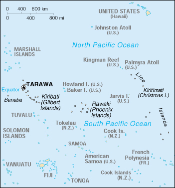

|
Kiribati | |
| Introduction Geography People Government Economy Communications Transportation Military Transnational Issues | ||
|  | ||
| Kiribati | Introduction | Top of Page |
| Background: | The Gilbert Islands were granted self-rule by the UK in 1971 and complete independence in 1979 under the new name of Kiribati. The US relinquished all claims to the sparsely inhabited Phoenix and Line Island groups in a 1979 treaty of friendship with Kiribati. |
| Kiribati | Geography | Top of Page |
| Location: | Oceania, group of islands in the Pacific Ocean, straddling the equator, about one-half of the way from Hawaii to Australia; note - on 1 January 1995, Kiribati proclaimed that all of its territory lies in the same time zone as its Gilbert Islands group (GMT +12) even though the Phoenix Islands and the Line Islands under its jurisdiction lie on the other side of the International Date Line |
| Geographic coordinates: | 1 25 N, 173 00 E |
| Map references: | Oceania |
| Area: |
total:
717 sq km
land: 717 sq km water: 0 sq km note: includes three island groups - Gilbert Islands, Line Islands, Phoenix Islands |
| Area - comparative: | four times the size of Washington, DC |
| Land boundaries: | 0 km |
| Coastline: | 1,143 km |
| Maritime claims: |
exclusive economic zone:
200 NM
territorial sea: 12 NM |
| Climate: | tropical; marine, hot and humid, moderated by trade winds |
| Terrain: | mostly low-lying coral atolls surrounded by extensive reefs |
| Elevation extremes: |
lowest point:
Pacific Ocean 0 m
highest point: unnamed location on Banaba 81 m |
| Natural resources: | phosphate (production discontinued in 1979) |
| Land use: |
arable land:
0%
permanent crops: 51% permanent pastures: 0% forests and woodland: 3% other: 46% (1993 est.) |
| Irrigated land: | NA sq km |
| Natural hazards: | typhoons can occur any time, but usually November to March; occasional tornadoes; low level of some of the islands make them very sensitive to changes in sea level |
| Environment - current issues: | heavy pollution in lagoon of south Tarawa atoll due to heavy migration mixed with traditional practices such as lagoon latrines and open-pit dumping; ground water at risk |
| Environment - international agreements: |
party to:
Biodiversity, Climate Change, Climate Change-Kyoto Protocol, Desertification, Hazardous Wastes, Marine Dumping, Ozone Layer Protection
signed, but not ratified: none of the selected agreements |
| Geography - note: | 20 of the 33 islands are inhabited; Banaba (Ocean Island) in Kiribati is one of the three great phosphate rock islands in the Pacific Ocean - the others are Makatea in French Polynesia, and Nauru |
| Kiribati | People | Top of Page |
| Population: | 94,149 (July 2001 est.) |
| Age structure: |
0-14 years:
40.53% (male 19,322; female 18,833)
15-64 years: 56.27% (male 26,136; female 26,841) 65 years and over: 3.2% (male 1,291; female 1,726) (2001 est.) |
| Population growth rate: | 2.31% (2001 est.) |
| Birth rate: | 31.98 births/1,000 population (2001 est.) |
| Death rate: | 8.88 deaths/1,000 population (2001 est.) |
| Net migration rate: | 0 migrant(s)/1,000 population (2001 est.) |
| Sex ratio: |
at birth:
1.05 male(s)/female
under 15 years: 1.03 male(s)/female 15-64 years: 0.97 male(s)/female 65 years and over: 0.75 male(s)/female total population: 0.99 male(s)/female (2001 est.) |
| Infant mortality rate: | 54 deaths/1,000 live births (2001 est.) |
| Life expectancy at birth: |
total population:
60.16 years
male: 57.25 years female: 63.22 years (2001 est.) |
| Total fertility rate: | 4.36 children born/woman (2001 est.) |
| HIV/AIDS - adult prevalence rate: | NA% |
| HIV/AIDS - people living with HIV/AIDS: | NA |
| HIV/AIDS - deaths: | NA |
| Nationality: |
noun:
I-Kiribati (singular and plural)
adjective: I-Kiribati |
| Ethnic groups: | predominantly Micronesian with some Polynesian |
| Religions: | Roman Catholic 54%, Protestant (Congregational) 30%, some Seventh-Day Adventist, Baha'i, Latter-day Saints, and Church of God (1996) |
| Languages: | English (official), I-Kiribati |
| Literacy: |
definition:
NA
total population: NA% male: NA% female: NA% |
| Kiribati | Government | Top of Page |
| Country name: |
conventional long form:
Republic of Kiribati
conventional short form: Kiribati note: pronounced kir-ih-bahss former: Gilbert Islands |
| Government type: | republic |
| Capital: | Tarawa |
| Administrative divisions: | 3 units; Gilbert Islands, Line Islands, Phoenix Islands; note - in addition, there are 6 districts (Banaba, Central Gilberts, Line Islands, Northern Gilberts, Southern Gilberts, Tarawa) and 21 island councils - one for each of the inhabited islands (Abaiang, Abemama, Aranuka, Arorae, Banaba, Beru, Butaritari, Kanton, Kiritimati, Kuria, Maiana, Makin, Marakei, Nikunau, Nonouti, Onotoa, Tabiteuea, Tabuaeran, Tamana, Tarawa, Teraina) |
| Independence: | 12 July 1979 (from UK) |
| National holiday: | Independence Day, 12 July (1979) |
| Constitution: | 12 July 1979 |
| Legal system: | NA |
| Suffrage: | 18 years of age; universal |
| Executive branch: |
chief of state:
President Teburoro TITO (since 1 October 1994); Vice President Tewareka TENTOA (since 12 October 1994); note - the president is both the chief of state and head of government
head of government: President Teburoro TITO (since 1 October 1994); Vice President Tewareka TENTOA (since 12 October 1994); note - the president is both the chief of state and head of government cabinet: Cabinet appointed by the president from among the members of the House of Assembly, includes the president, vice president, attorney general, and up to eight other ministers elections: the House of Assembly chooses the presidential candidates from among their members and then those candidates compete in a general election; president is elected by popular vote for a four-year term; election last held 27 November 1998 (next to be held by NA November 2002); vice president appointed by the president election results: Teburoro TITO reelected president; percent of vote - Teburoro TITO 52.3%, Dr. Harry TONG 45.8%, Amberoti NIKORA 1.9%, Taberannang TIMEON 0% |
| Legislative branch: |
unicameral House of Assembly or Maneaba Ni Maungatabu (41 seats; 39 elected by popular vote, one ex officio member, and one nominated to represent Banaba; members serve four-year terms)
elections: last held 23 September 1998 (next to be held by NA September 2002) election results: percent of vote by party - NA%; seats by party - Maneaban Te Mauri Party 14, National Progressive Party 11, independents 14 |
| Judicial branch: | Court of Appeal; High Court; 26 Magistrates' courts; judges at all levels are appointed by the president |
| Political parties and leaders: |
Maneaban Te Mauri Party [Teburoro TITO]; National Progressive Party [Teatao TEANNAKI]
note: there is no tradition of formally organized political parties in Kiribati; they more closely resemble factions or interest groups because they have no party headquarters, formal platforms, or party structures |
| Political pressure groups and leaders: | NA |
| International organization participation: | ACP, AsDB, C, ESCAP, FAO, IBRD, ICAO, ICFTU, ICRM, IDA, IFC, IFRCS, ILO, IMF, Intelsat (nonsignatory user), ITU, OPCW, Sparteca, SPC, SPF, UN, UNESCO, UPU, WHO, WTrO (applicant) |
| Diplomatic representation in the US: | Kiribati does not have an embassy in the US; there is an honorary consulate in Honolulu |
| Diplomatic representation from the US: | the US does not have an embassy in Kiribati; the ambassador to the Marshall Islands is accredited to Kiribati |
| Flag description: | the upper half is red with a yellow frigate bird flying over a yellow rising sun, and the lower half is blue with three horizontal wavy white stripes to represent the ocean |
| Kiribati | Economy | Top of Page |
| Economy - overview: | A remote country of 33 scattered coral atolls, Kiribati has few national resources. Commercially viable phosphate deposits were exhausted at the time of independence from the UK in 1979. Copra and fish now represent the bulk of production and exports. The economy has fluctuated widely in recent years. Economic development is constrained by a shortage of skilled workers, weak infrastructure, and remoteness from international markets. Tourism provides more than one-fifth of GDP. The financial sector is at an early stage of development as is the expansion of private sector initiatives. Foreign financial aid, largely from the UK and Japan, is a critical supplement to GDP, equal to 25%-50% of GDP in recent years. Remittances from workers abroad account for more than $5 million each year. Performance in 2000 fell short of the 2.5% growth in 1999, which benefited from increased copra production and exceptionally large revenues from fishing licenses. |
| GDP: | purchasing power parity - $76 million (2000 est.), supplemented by a nearly equal amount from external sources |
| GDP - real growth rate: | 1% (2000 est.) |
| GDP - per capita: | purchasing power parity - $850 (2000 est.) |
| GDP - composition by sector: |
agriculture:
14%
industry: 7% services: 79% (1996 est.) |
| Population below poverty line: | NA% |
| Household income or consumption by percentage share: |
lowest 10%:
NA%
highest 10%: NA% |
| Inflation rate (consumer prices): | 2% (1999 est.) |
| Labor force: | 7,870 economically active, not including subsistence farmers (1985 est.) |
| Unemployment rate: | 2%; underemployment 70% (1992 est.) |
| Budget: |
revenues:
$33.3 million
expenditures: $47.7 million, including capital expenditures of $NA million (1996 est.) |
| Industries: | fishing, handicrafts |
| Industrial production growth rate: | 0.7% (1992 est.) |
| Electricity - production: | 7 million kWh (1999) |
| Electricity - production by source: |
fossil fuel:
100%
hydro: 0% nuclear: 0% other: 0% (1999) |
| Electricity - consumption: | 6.5 million kWh (1999) |
| Electricity - exports: | 0 kWh (1999) |
| Electricity - imports: | 0 kWh (1999) |
| Agriculture - products: | copra, taro, breadfruit, sweet potatoes, vegetables; fish |
| Exports: | $6 million (f.o.b., 1998) |
| Exports - commodities: | copra 62%, coconuts, seaweed, fish |
| Exports - partners: | Bangladesh, Australia, US, Hong Kong (1999) |
| Imports: | $44 million (c.i.f., 1999) |
| Imports - commodities: | foodstuffs, machinery and equipment, miscellaneous manufactured goods, fuel |
| Imports - partners: | Australia, Fiji, Japan, NZ, China (1999) |
| Debt - external: | $10 million (1999 est.) |
| Economic aid - recipient: | $15.5 million (1995), largely from UK and Japan |
| Currency: | Australian dollar (AUD) |
| Currency code: | AUD |
| Exchange rates: | Australian dollars per US dollar - 1.7995 (January 2001), 1.7173 (2000), 1.5497 (1999), 1.5888 (1998), 1.3439 (1997), 1.2773 (1996) |
| Fiscal year: | NA |
| Kiribati | Communications | Top of Page |
| Telephones - main lines in use: | 2,000 (1997) |
| Telephones - mobile cellular: | NA |
| Telephone system: |
general assessment:
NA
domestic: NA international: satellite earth station - 1 Intelsat (Pacific Ocean) note: Kiribati is being linked to the Pacific Ocean Cooperative Telecommunications Network, which should improve telephone service |
| Radio broadcast stations: | AM 1, FM 1, shortwave 1 (1998) |
| Radios: | 17,000 (1997) |
| Television broadcast stations: | 1 (1997) |
| Televisions: | 1,000 (1997) |
| Internet country code: | .ki |
| Internet Service Providers (ISPs): | 1 (2000) |
| Internet users: | 1,000 (2000) |
| Kiribati | Transportation | Top of Page |
| Railways: | 0 km |
| Highways: |
total:
670 km (1996)
paved: NA km unpaved: NA km |
| Waterways: | 5 km (small network of canals in Line Islands) |
| Ports and harbors: | Banaba, Betio, English Harbor, Kanton |
| Merchant marine: |
total:
1 ship (1,000 GRT or over) totaling 1,291 GRT/1,295 DWT
ships by type: passenger/cargo 1 (2000 est.) |
| Airports: | 21 (2000 est.) |
| Airports - with paved runways: |
total:
4
1,524 to 2,437 m: 4 (2000 est.) |
| Airports - with unpaved runways: |
total:
17
914 to 1,523 m: 12 under 914 m: 5 (2000 est.) |
| Kiribati | Military | Top of Page |
| Military branches: | no regular military forces; Police Force (carries out law enforcement functions and paramilitary duties; small police posts are on all islands) |
| Military expenditures - dollar figure: | $NA |
| Military expenditures - percent of GDP: | NA% |
| Military - note: | Kiribati does not have military forces; defense assistance is provided by Australia and NZ |
| Kiribati | Transnational Issues | Top of Page |
| Disputes - international: | none |
{kind=link}
{kind=link}